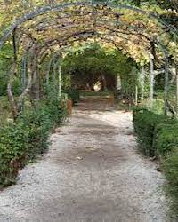
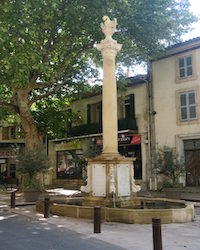
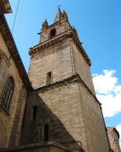

<!DOCTYPE html>
<html lang="fr"></html>
    <head>
        <meta charset="UTF-8">

        <title>Pelissanne</title>
        <link rel="icon" type="image/ico" sizes="16x16" href="images/blason.ico">
        <link rel="stylesheet" href="css/style.css">
        <link rel="stylesheet" href="https://cdnjs.cloudflare.com/ajax/libs/font-awesome/4.7.0/css/font-awesome.css">
    </head>
    <body>
        <header>
            <!-- création de la navbar d'en haut -->
            <nav>
                <ul>
                    <li id="logo"><a href="#">Le village de Pélissanne</a></li>
                    <li><a href="#Langue">Langue</a></li>
                    <li><a href="#reserver">Réserver</a></li>
                    <li><a href="#contact">Nous contacter</a></li>
                </ul>
            </nav>
            <div id="imagePrincipale">
                <h1>Pélissanne</h1>
                <div id="premierTrait"></div>
                <h3>Village de Provence</h3>
            </div>
        </header>
        <!-- Premiere section -->
        <section id="presentation">
            <div id="texteIntro">
                <h2>Un lieu unique, pour un séjour unique</h2>
                <p>Ancienne cité fortifiée, les premières traces d’habitat remontent à la préhistoire avec l’installation de populations néolithiques (4000 av. JC) sur le site archéologique de la Chapelle Saint-Laurent de Cabardel, puis à l’époque pré-romaine avec l’aménagement d’oppida comme le « Caronte » et le Valdegon.

                    Dès l’Antiquité, Pélissanne est une ville carrefour : les voies Auréliennes des Côtes et de Redourtière la relient alors aux grandes villes romaines.
                    
                    Au XVIe siècle, l’agriculture connaît un nouvel essor grâce à la construction du Canal de Craponne et de nouveaux moulins sont installés sur son cours en plus de ceux situés sur la Touloubre.
                    
                    Peu à peu, la vieille ville devient un quartier résidentiel avec de nombreux hôtels particuliers encore visibles aujourd’hui et suite à la Révolution, l’artisanat se développe.
                    
                    Le village conserve la “fontaine du Pélican” édifiée au XVIIIe siècle, le Beffroi datant du XVIe siècle, des Loges et Mâchicoulis Renaissance.</p>
            </div>
            <div id="prestations">
                <div class="imagePrestations">
                    <h4>Parc au coeur de la ville</h4>
                    <a href="#"></a>
                </div>
                <div class="imagePrestations">
                    <h4>Place Cabardel</h4>
                    <a href="#"></a>
                </div>
                <div class="imagePrestations">
                    <h4>Eglise Saint Maurice</h4>
                    <a href="#"></a>
                </div>
            </div>
        </section>
        <!-- Deuxieme section -->
        <section id="tourisme">
            <h2>Un patrimoine, une histoire ...</h2>
            <ul>
                <li id="lavoir"><p>Lavoir Passadouires</p></li>
                <li id="moulin"><p>Moulin Jean-Bertrand</p></li>
                <li id="parc"><p>Parc Moreau</p></li>
                <li id="chateau"><p>Chateau de la Barben</p></li>
            </ul>
        </section>
        <!-- Debut du footer -->
        <footer>
            <h2 id="contact">Contactez-nous</h2>
            <!-- Creation du formulaire -->
            <form>
                <input placeholder="Nom">
                <input placeholder="E-mail">
                <textarea placeholder="Votre message ici"></textarea>
                <button>Envoyer</button>
            </form>
            <div id="deuxiemeTrait"></div>
            <div id="copyrightEtIcons">
                <div id="copyright">
                    <span>© MetaDevJunior</span>
                </div>
                <!-- Utilisation du link dans le header vers la lib css fontawesome pour recup les icones -->
                <div id="icons">
                    <a href="http://www.twitter.fr"><i class="fa fa-twitter"></i></a>
                    <a href="http://www.facebook.fr"><i class="fa fa-facebook"></i></a>
                    <a href="http://www.instagram.fr"><i class="fa fa-instagram"></i></a>
                </div>
            </div>
        </footer>
    </body>

</html>
